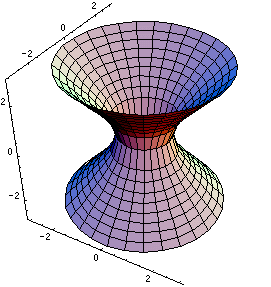

Interactive Gallery of Quadric Surfaces
| Quadric surfaces are important objects in Multivariable Calculus and Vector Analysis classes. We like them because they are natural 3D-extensions of the so-called conics (ellipses, parabolas, and hyperbolas), and they provide examples of fairly nice surfaces to use as examples for the rest of your class. The basic quadric surfaces are described by the following equations, where \(A\), \(B\), and \(C\) are constants. \begin{gather*} z= Ax^2+By^2 \qquad\qquad\qquad z^2=Ax^2+By^2\\ \frac{x^2}{A^2}+\frac{y^2}{B^2} - \frac{z^2}{C^2} = 1 \qquad\qquad -\frac{x^2}{A^2}-\frac{y^2}{B^2} + \frac{z^2}{C^2} = 1\\ \frac{x^2}{A^2}+\frac{y^2}{B^2} + \frac{z^2}{C^2} = 1 \end{gather*} Rather than memorize the equations, you should learn how to examine cross sections to figure out what surface a given equation represents. |
 |
Using This Gallery
In this gallery you'll find interactive pictures of the quadric surfaces. You can see what the cross sections look like, and also see how various coefficients can affect how they look. These pictures all include "sliders," like the following two examples. The picture on the left shows a sphere with an adjustable radius; click and drag the blue dot to change it. The picture on the right shows you the various cross sections of the sphere. Click and drag the blue dots to adjust the chosen values for \(x\), \(y\), and \(z\). You can also rotate the pictures and zoom in or out.
|
Rotate: Click and Drag Zoom: Shift + Click and Drag Up or Down Restore Image: Home key Click and Drag the Blue Dots to Adjust Values | |
Once you've gotten the hang of these two demos, you're ready to look at the gallery images. Use the menu at upper left portion of this page to choose which quadric surface you'd like to see.
A Note about Domains
Sometimes a computer can graph a surface in more than one way. Look at the two pictures below; they both show graphs of the function \(z = x^2+y^2\). The one on the left is probably more familiar, and it's what most of us would draw by hand. The picture on the right can be useful, though, because the gridlines on the surface show you the cross sections \(x=c\) and \(y=c\) of the surface.
In technical terms, the two pictures show graphs of the same function but with different domains. On the left the domain is a disk, described by $$ 0 \leq x^2 + y^2 \leq 2 $$ On the right, the domain is a square, $$ \begin{align} -1 \leq x \leq 1 \\ -1 \leq y \leq 1 \end{align} $$
In this gallery I've drawn a lot of surfaces with square domains to emphasize the vertical cross sections. I've also included buttons below certain pictures which let you change the domain to a disk. You might be surprised how different some of the pictures will look when you change the domain.
In fact, that leads to a good way to gauge how well you understand the quadric surfaces. On each page you'll be able to adjust the coefficients of the equation. Do this with both domains, and see if you can tell that it affects both graphs in the same way.
Technical and Legal Details
This gallery was written by Jonathan Rogness and first appeared in the 2005 volume of Journal of Online Mathematics.
In 2016, Nathan Dunfield redid the interactive 3D graphics from scratch using three.js instead of LiveGraphics3D so they work on web browsers that lack Java. Some updates from MathInsight.org were also incorporated into this version.
This material is Copyright 2004-2016 by Jonathan Rogness, DQ Nykamp, and Nathan Dunfield, and licensed under the Creative Commons Attribution-NonCommercial-ShareAlike License.